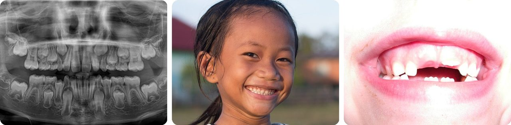

🌍 Top 10 Structure des dents, caries et curiosités dentaires
17 novembre 2026
1. 💎 L'émail des dents est la chose la plus dure de ton corps
 La couche blanche et brillante à l'extérieur d'une dent, c'est l'émail, et il est plus dur que n'importe lequel de tes os. Il est fait à 96 % de minéraux, surtout un cristal de calcium et de phosphate, et il ne dépasse pas 2,5 mm d'épaisseur, à peu près deux pièces fines empilées.
La couche blanche et brillante à l'extérieur d'une dent, c'est l'émail, et il est plus dur que n'importe lequel de tes os. Il est fait à 96 % de minéraux, surtout un cristal de calcium et de phosphate, et il ne dépasse pas 2,5 mm d'épaisseur, à peu près deux pièces fines empilées.
Mais il est aussi cassant, et il a un gros point faible : il n'est pas vivant. Les cellules qui fabriquent l'émail disparaissent avant même que la dent sorte de la gencive.
Donc l'émail n'a ni nerfs, ni sang, ni moyen de repousser. Ta bouche peut réparer de toutes petites abîmures au début, mais une fois qu'un vrai trou s'est formé, ni ton corps ni un dentiste ne peuvent le faire repousser. Un plombage ne fait que boucher le trou.
C'est une armure qu'on ne peut jamais réparer, seulement rapiécer.
2. 🧊 Sous l'émail, tes dents sont pleines de minuscules tubes
 Sous l'émail, il y a la dentine, une couche jaunâtre plus tendre qui donne sa couleur à la dent. Elle est remplie de tunnels microscopiques appelés tubules dentinaires. Près du centre, il y en a de 59 000 à 76 000 dans un seul millimètre carré, une zone grande comme la pointe d'un crayon.
Sous l'émail, il y a la dentine, une couche jaunâtre plus tendre qui donne sa couleur à la dent. Elle est remplie de tunnels microscopiques appelés tubules dentinaires. Près du centre, il y en a de 59 000 à 76 000 dans un seul millimètre carré, une zone grande comme la pointe d'un crayon.
Chaque tube contient un fin bras d'une cellule vivante et un peu de liquide. Quand l'émail s'use et que ces tubes sont à découvert, l'explication la plus admise est celle-ci : le froid fait bouger le liquide → ce mouvement réveille le nerf → tu sens ce petit « zing » qui fait mal.
Et contrairement à l'émail, la dentine continue de pousser doucement toute ta vie.
Vois ça comme une éponge pleine de minuscules pailles qui mènent toutes à un nerf.
3. 🔴 Chaque dent a un cœur vivant qui rétrécit avec l'âge
 Au centre de chaque dent, il y a la pulpe : un tissu mou avec des nerfs et des vaisseaux sanguins. Elle part d'une petite chambre dans la couronne et descend dans des canaux étroits à l'intérieur des racines.
Au centre de chaque dent, il y a la pulpe : un tissu mou avec des nerfs et des vaisseaux sanguins. Elle part d'une petite chambre dans la couronne et descend dans des canaux étroits à l'intérieur des racines.
La pulpe d'une dent d'adulte ne fait qu'environ 0,02 centimètre cube, moins d'une demi-goutte d'eau. Ce sont ses cellules extérieures qui continuent de fabriquer de la nouvelle dentine.
Comme cette nouvelle dentine s'accumule vers l'intérieur, la chambre de la pulpe rapetisse quand on vieillit. Si une carie atteint la pulpe, le dentiste peut devoir faire une dévitalisation, c'est-à-dire nettoyer et retirer la pulpe.
Autrement dit, une dent, c'est une coque dure autour d'un tout petit centre vivant.
4. 🍬 Ce n'est pas le sucre qui abîme les dents, ce sont les bactéries qui le mangent
 Pour qu'une carie apparaisse, il faut quatre choses : une dent, les bonnes bactéries, du sucre et du temps. La principale coupable est une bactérie appelée Streptococcus mutans, qui vit dans la pellicule collante sur tes dents, la plaque dentaire.
Pour qu'une carie apparaisse, il faut quatre choses : une dent, les bonnes bactéries, du sucre et du temps. La principale coupable est une bactérie appelée Streptococcus mutans, qui vit dans la pellicule collante sur tes dents, la plaque dentaire.
Quand tu manges du sucre, ces bactéries en mangent aussi, et elles le transforment en acide lactique. Dès que la plaque descend sous un pH de 5,5 (un peu moins acide que le café noir), l'émail commence à se dissoudre. En plus, elles transforment le sucre de table en une sorte de colle qui les aide à s'accrocher à la dent.
C'est pour ça que le nombre de grignotages compte : après chaque en-cas sucré, l'acidité de la plaque grimpe vite. En 2016, environ 3,6 milliards de personnes, presque la moitié du monde, avaient des caries sur leurs dents définitives.
En gros, tu partages chaque bonbon avec des microbes, et leurs restes, c'est de l'acide.
5. 🪨 Le tartre, c'est de la plaque durcie pleine de bactéries fossilisées
 Si la plaque reste assez longtemps sur tes dents, les minéraux de ta salive s'y infiltrent et la durcissent jusqu'à en faire du tartre.
Si la plaque reste assez longtemps sur tes dents, les minéraux de ta salive s'y infiltrent et la durcissent jusqu'à en faire du tartre.
En durcissant, il tue les bactéries à l'intérieur, mais il laisse une surface rugueuse où la nouvelle plaque s'accroche encore plus vite → d'autres couches s'empilent → ça irrite les gencives, qui peuvent gonfler et se rétracter. Une fois dur, la brosse à dents ne peut plus l'enlever. Il faut qu'un professionnel le gratte.
Les scientifiques le comparent à du béton, avec les bactéries mortes dans le rôle du gravier. Il est si compact qu'un milligramme, une miette plus petite qu'un grain de riz, contient environ 200 millions de cellules. Le tartre retrouvé lors de fouilles archéologiques garde même de l'ADN et des bouts de nourriture, qui montrent ce que les gens mangeaient il y a longtemps.
C'est un journal de tes repas, gravé dans la pierre sur tes dents.
6. 🥤 Les sodas et les jus peuvent user les dents sans aucun microbe
 Les caries viennent des microbes, mais l'érosion acide, non. C'est l'acide des aliments et des boissons qui dissout directement l'émail. C'est le problème chronique le plus fréquent chez les enfants de 5 à 17 ans.
Les caries viennent des microbes, mais l'érosion acide, non. C'est l'acide des aliments et des boissons qui dissout directement l'émail. C'est le problème chronique le plus fréquent chez les enfants de 5 à 17 ans.
Les boissons dont le pH est en dessous d'environ 5,0 à 5,7 peuvent la provoquer. Dans le cola, le problème, ce ne sont pas les bulles, mais les acides citrique et phosphorique ajoutés pour le goût. Les jus de fruits sont sournois aussi : ils résistent mieux que les autres boissons testées aux efforts de ta salive pour neutraliser l'acide.
La fréquence compte plus que la quantité. Siroter une boisson acide encore et encore, c'est replonger tes dents dans l'acide à chaque fois.
C'est comme si tes dents fondaient doucement dans un léger bain d'acide.
7. 🇺🇸 Des dents tachées de brun au Colorado ont mené au fluor
 Au début des années 1900, un dentiste nommé Frederick McKay a remarqué que beaucoup de gens au Colorado avaient des dents tachetées de brun, ce qu'on appelait la « tache brune du Colorado ». Le plus bizarre : ces dents tachées n'avaient presque jamais de caries.
Au début des années 1900, un dentiste nommé Frederick McKay a remarqué que beaucoup de gens au Colorado avaient des dents tachetées de brun, ce qu'on appelait la « tache brune du Colorado ». Le plus bizarre : ces dents tachées n'avaient presque jamais de caries.
McKay a passé 30 ans sur ce mystère. En 1931, un chimiste a analysé l'eau de plusieurs endroits où la tache était courante et a trouvé la réponse : du fluor naturel dans l'eau du robinet.
Les scientifiques ont ensuite découvert qu'une petite quantité, environ 1 milligramme par litre, protège des caries, avec au pire de très légères marques au lieu de taches brunes. Le 25 janvier 1945, Grand Rapids, dans le Michigan, est devenue la première ville à ajouter exprès du fluor dans son eau, et en 1950, les résultats montraient beaucoup moins de caries.
En gros, un mystère de taches est devenu une eau du robinet qui combat les caries.
8. 👶 Tes dents d'adulte se cachent dans ta mâchoire pendant que tu utilises tes dents de lait

Les enfants ont 20 dents de lait. Leurs bourgeons commencent à se former avant la naissance, quand le bébé n'a que 8 semaines de croissance, et elles commencent en général à sortir vers 6 mois.Pendant ce temps, les dents d'adulte poussent dans l'os de la mâchoire, en dessous. Quand chacune remonte, elle appuie sur les racines de la dent de lait → des cellules spéciales dissolvent ces racines → la dent de lait bouge et tombe. Ça arrive en général entre 6 et 12 ans.
En Turquie et en Grèce, les enfants lancent leur dent tombée sur le toit en faisant un vœu. En Inde, en Corée et au Vietnam, les enfants la jettent parfois sur le toit en demandant une dent de souris en échange, parce que les dents des souris n'arrêtent jamais de pousser.
Vois ça comme une deuxième série de dents qui fait la queue en attendant son tour.
9. 🇺🇸 Les fausses dents de George Washington n'ont jamais été en bois
 Le 30 avril 1789, quand George Washington est devenu le premier président des États-Unis, il ne lui restait qu'une seule dent à lui. Il a eu au moins quatre dentiers dans sa vie.
Le 30 avril 1789, quand George Washington est devenu le premier président des États-Unis, il ne lui restait qu'une seule dent à lui. Il a eu au moins quatre dentiers dans sa vie.
Beaucoup de gens croient qu'ils étaient en bois, mais il n'y avait pas de bois du tout. Ils étaient faits d'ivoire d'hippopotame, de laiton, d'or, de dents d'animaux et de dents humaines. Des ressorts écartaient le haut et le bas, et des boulons les tenaient ensemble.
Lui disait avoir perdu ses dents en cassant des noix avec. Les archives montrent aussi qu'en 1784, il a payé des personnes réduites en esclavage à Mount Vernon pour neuf dents ; les historiens se demandent encore si ces dents étaient pour lui.
Son sourire tenait plus de la boîte à outils que de la dent.
10. 🪥 Avant les brosses à dents, on mâchait des bâtonnets
 L'ancêtre de la brosse à dents, c'est le bâtonnet à mâcher : une brindille au bout effiloché qu'on frottait sur ses dents. Les plus anciens remontent à environ 3500 av. J.-C., à Sumer, dans l'Irak d'aujourd'hui. Beaucoup de gens en utilisent encore, comme le miswak dans le monde musulman.
L'ancêtre de la brosse à dents, c'est le bâtonnet à mâcher : une brindille au bout effiloché qu'on frottait sur ses dents. Les plus anciens remontent à environ 3500 av. J.-C., à Sumer, dans l'Irak d'aujourd'hui. Beaucoup de gens en utilisent encore, comme le miswak dans le monde musulman.
La première brosse à poils qui ressemble aux nôtres vient de Chine, sous la dynastie Tang (619–907). Elle avait des soies de cochon attachées à un manche en bambou ou en os. Les cochons venaient d'endroits froids comme la Sibérie, parce que le froid rendait leurs soies plus fermes.
Les Européens ont adopté l'idée au XVIIe siècle, mais trouvaient les soies de cochon trop dures, alors beaucoup ont utilisé du crin de cheval, plus doux. Les poils en nylon ne sont arrivés qu'en 1938.
Autrement dit, ta brosse à dents est la version chic d'une brindille mâchouillée.
Le saviez-vous ?
La première brosse à dents fabriquée en série en Grande-Bretagne aurait été imaginée en prison. En 1770, William Addis a été enfermé pour avoir provoqué une émeute, et il a trouvé que se frotter les dents avec un chiffon, de la suie et du sel, ce n'était pas terrible. Il a gardé un petit os d'un repas, l'a percé de trous et y a collé des poils obtenus auprès d'un gardien ; une fois libéré, il a lancé une entreprise de brosses à dents qui l'a rendu riche, et sa famille l'a dirigée jusqu'en 1996. De quoi se demander quelles autres inventions du quotidien ont d'abord été imaginées derrière les barreaux.
Crédits photo (Wikimedia Commons)
- #1: Molar cut up during extraction - 2018-08-29 - Andy Mabbett -.jpg by Andy Mabbett, CC BY-SA 4.0
- #1: Lower wisdom tooth.jpg by No machine-readable author provided. Gleam~commonswiki assumed (based on copyright claims)., CC BY-SA 3.0
- #1: Young girl smiling with teeth in sunshine.jpg by Basile Morin, CC BY-SA 4.0
- #2: Dentinal tubules.jpg by Pinkmanggis, CC BY-SA 4.0
- #2: Dentinal tubules. Transverse ground section (rawpixel) by thegetty, CC0
- #2: Odontoblasts, showing Tomes's fibers entering (rawpixel) by thegetty, CC0
- #3: Dental X-Ray (flickr) by schoschie, CC BY 2.0
- #3: Pulp tissue removed during endodontic therapy by a size 20 broach file.jpg by DRosenbach at en.Wikipedia, Public domain
- #3: Electric pulp tester unit.jpg by Coronation Dental Specialty Group, CC BY-SA 3.0
- #4: Various candy and lollipops, 2007.jpg by Nick Carter, CC BY 2.0
- #4: Dental Caries Lower Right First Molar.jpg by Dr. Yogesh, CC BY-SA 4.0
- #4: Dental Caries Cavity 2 (cropped).JPG by Suyash.dwivedi, CC BY-SA 4.0
- #5: Dental Calculus.jpg by JonathanPulse, CC0
- #5: Sarro.jpg by Roquex, CC0
- #5: MandibularAnteriorCalculus.JPG by DRosenbach at English Wikipedia, Public domain
- #6: Mexican Coca Cola.jpg by Mike Mozart, CC BY 2.0
- #6: Молочный зуб любителя кока-колы.jpg by Anastasialogunov, CC BY 4.0
- #6: Coca-Cola glass bottle.jpg by Oleg Yunakov, CC BY-SA 4.0
- #7: Dental Flurosis (teeth with brown stains).jpg by Nizil Shah, CC BY-SA 4.0
- #7: Dental fluorosis (mild).png by Matthew Ferguson 57, CC BY-SA 4.0
- #7: Gezicht op Colorado Springs en het spoorwegstation met op de achtergrond de Pikes Peak Colorado Springs and Pikes Peak (titel op object), RP-F-2012-96-220.jpg by Rijksmuseum, CC0
- #8: Pano8.png by Roquex, CC0
- #8: Smiling young girl with deciduous teeth.jpg by Basile Morin, CC BY-SA 4.0
- #8: Deciduous teeths.jpg by Sebastian Wallroth, Public domain
- #9: Washington Teeth.jpg by BakedintheHole, CC BY-SA 4.0
- #9: Gilbert Stuart - George Washington (The Athenaeum Portrait) - Google Art Project.jpg by Gilbert Stuart, Public domain
- #9: West Face of Mansion, Mount Vernon, Near Alexandria, Virginia (2731038734).jpg by Ken Lund from Reno, Nevada, USA, CC BY-SA 2.0
- #10: Miswak 2014.jpg by محمد الفلسطيني, CC BY-SA 3.0
- #10: Napoleon Bonaparte's Toothbrush Wellcome L0043828.jpg by unknown, CC BY 4.0
- #10: Miswak003.jpg by Middayexpress, CC BY-SA 3.0


.JPG){kind=link}


.jpg){kind=link}
.png){kind=link}
,_RP-F-2012-96-220.jpg){kind=link}


_-_Google_Art_Project.jpg){kind=link}
.jpg){kind=link}